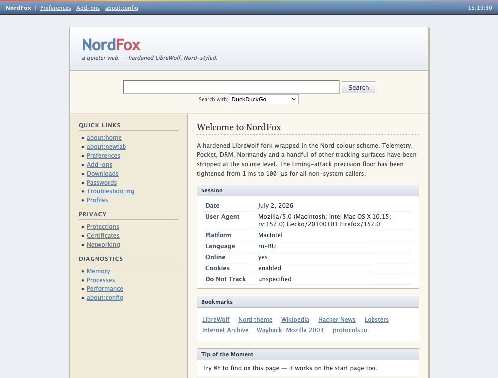

Download
NordFox 140.13.0-1
↓ All downloads on GitHub Releases
Every file ships with a matching
.sha256. Nothing is code-signed by a
paid identity, so Windows SmartScreen and macOS Gatekeeper both want one extra
confirmation on first launch — the per-platform steps below cover it.
Windows 10 / 11 — x86_64
- Download
NordFox-140.13.0-1-windows-x86_64-installer.exe. - Run it. If SmartScreen appears, choose More info → Run anyway.
- Finish the wizard and start NordFox from the Start menu.
NordFox-140.13.0-1-windows-x86_64.zip is a portable
build — extract it anywhere and run firefox.exe.
Linux — x86_64
- Download the archive and its
.sha256, then verify and unpack:sha256sum -c NordFox-*-linux-x86_64.tar.bz2.sha256 mkdir -p ~/.local/opt/nordfox tar -xjf NordFox-*-linux-x86_64.tar.bz2 \ -C ~/.local/opt/nordfox --strip-components=1
- Run
~/.local/opt/nordfox/firefox.
~/.local/opt/nordfox.
macOS — Apple Silicon
- Open
NordFox-140.13.0-1-arm64.dmgand drag NordFox.app into Applications. - First launch: right-click NordFox.app → Open → confirm.
Or clear the quarantine flag from a terminal:
xattr -dr com.apple.quarantine /Applications/NordFox.app
- Cmd+T opens the quick-dial new tab; new windows open the retro start page.
Features
- Source-level de-bloat — Normandy/Shield (remote experiments) and Pocket are removed from the code, not just switched off.
- Hardening that survives a new profile — an enterprise
policies.jsonis compiled into the app, so telemetry, Mozilla accounts and the sponsored-content surfaces stay off even in a profile created from scratch. - An ad blocker out of the box — uBlock Origin is installed on first run by policy, and stays removable.
- Timing-attack floor —
performance.now()precision is clamped to 100 µs for all non-system callers (Firefox default: 1 ms with RFP off). - Nothing phones home — built without crash reporter and updater; telemetry, captive-portal pings, region lookups, the AI chatbot sidebar and remote recommendations are all disabled.
- No DRM — Widevine/EME are compiled out.
- Private DNS — DNS-over-HTTPS via Quad9 in TRR-only mode (no system-resolver fallback), plus Encrypted Client Hello to hide SNI.
- Anti-fingerprinting — resistFingerprinting + fingerprinting protection with letterboxing, canvas randomization, and spoofed window metrics.
- Tracking parameters stripped —
utm_*,fbclid,gclidand friends are removed before the request is ever made, and bounce-tracking redirect hops get their state purged. - Local-only Safe Browsing — malware/phishing lists checked locally, no per-download remote lookups.
- Retro chrome — classic Firefox 1.x look: menu bar, boxed URL bar, square tabs, status bar, and a 2003-style start page. All in the Nord palette.
Screenshot
The NordFox start page

Build from source
Every NordFox package starts from Mozilla's own Firefox ESR source tarball, checked
against Mozilla's published SHA256SUMS before anything is unpacked. One
script drives all three platforms:
python3 build_native.py linux all python3 build_native.py macos all python build_native.py windows all
You need Python 3.9+, Node.js, Git, Pillow (pip install pillow), about
8 GB of RAM and 30 GB of disk. Mozilla's mach bootstrap pulls the
rest of the toolchain. On Windows, run it from
MozillaBuild;
on macOS you need the Xcode Command Line Tools. A full build is measured in hours.
To apply just the theme and the hardened user.js to an existing Firefox or
LibreWolf profile, without building anything, run ./install.sh.
FAQ
- Which architectures are supported?
- Windows and Linux are x86_64; macOS is Apple Silicon (arm64). There is no Intel Mac build and no ARM Linux build — nobody has built or tested them.
- Why are there no automatic updates?
- The Mozilla updater is compiled out on purpose — an auto-update channel is also a remote-code channel. The cost is real: nothing tells you when your build goes stale, so watch the releases page and replace the install by hand.
- What is the difference between
user.jsandpolicies.json? security/user.jsis per-profile: create a new profile and it is gone.branding/policies.jsonis read by the application itself before any profile is loaded, so the settings that matter most cannot be lost that way. NordFox ships both.- Why is LTO disabled in the build?
- Rust and the C++ compiler carry different LLVM versions, and any LTO mode makes the linker choke on the other side's bitcode. NordFox turns LTO off end to end — including the per-crate Rust LTO the build system otherwise enables behind your back — rather than ship a build that only links by luck.
- How does this relate to LibreWolf?
- NordFox began as LibreWolf's patch set on Firefox ESR 128 for macOS. The current builds apply NordFox's own source patches directly to Mozilla's ESR 140 tarball, so the LibreWolf patch set is no longer a build dependency — but the privacy defaults are still very much in its debt. librewolf.net
- Something broke on a site I need. What do I flip?
- Most breakage comes from WebGL/WebRTC/service workers being off or TRR-only DNS.
All of it is plain prefs — open
about:configand relax the specific pref; thesecurity/user.jsin the repo documents every one.